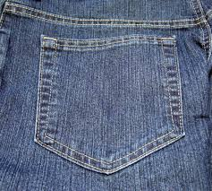
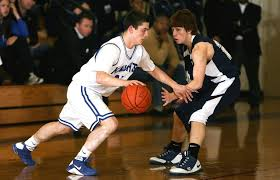
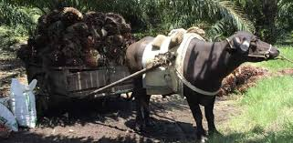
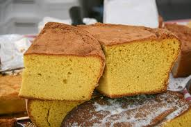
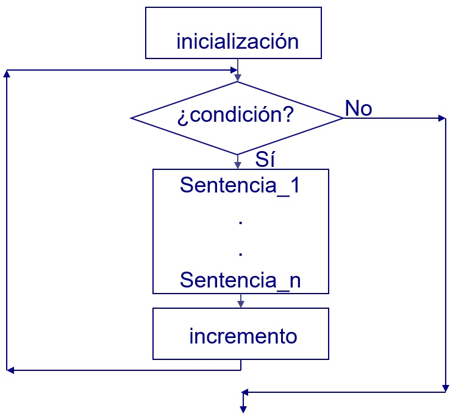

En esta página encontraremos las palabras más comunes para la letra B
Bolsillo: Bolsa pequeña, con una abertura fija, que se cose a una prenda de vestir o se añade a otros objetos.

Baloncesto: Juego entre dos equipos de cinco jugadores cada uno, cuyo objetivo es introducir el balón en la cesta o canasta del contrario, situada a una altura determinada.

Bestia: Animal doméstico de carga; por ejemplo, el caballo, la mula, etcétera.

Bizcocho: Dulce blando y esponjoso, hecho generalmente con harina, huevos y azúcar, que se cuece en el horno.

Bucle: Serie de instrucciones que se repiten indefinidamente mientras no se cumpla una condición previamente establecida.
